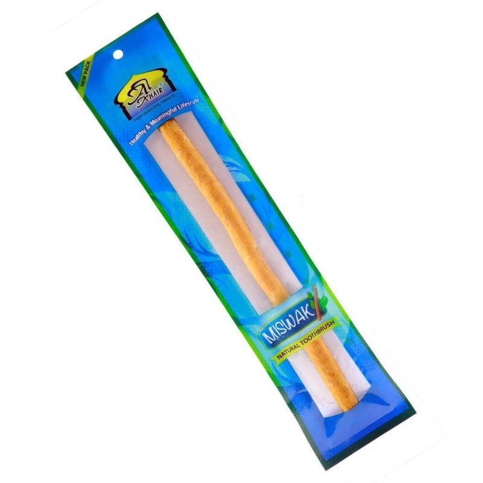

I. Fin, épais : de quoi parle-t-on exactement ?
Le Siwak (ou Miswak) est une racine ou une tige de Salvadora persica, un arbuste dont le bois tendre et fibreux s'effiloche naturellement pour former de fines fibres semblables à des poils de brosse à dents. Sur un même arbuste, le diamètre de la tige varie selon la branche récoltée : les rameaux les plus jeunes donnent des bâtons fins (environ 6 à 8 mm de diamètre), tandis que les branches plus matures donnent des bâtons épais (10 à 14 mm).
Ce n'est donc pas une différence de qualité ou d'espèce — les deux calibres proviennent de la même plante et possèdent exactement les mêmes propriétés actives (alcaloïdes antibactériens, silice naturelle, tanins, fluor naturel). La différence porte uniquement sur la flexibilité du bois, la surface de contact en bouche et la résistance à l'usure.
II. Le Siwak fin : souplesse et précision
Le bâton fin est plus souple sous la pression des doigts et des dents. Sa faible section lui permet de se glisser plus facilement entre les dents et le long de la ligne gingivale, là où un bâton plus large aurait du mal à accéder.
🌱 Pour qui est-il idéal ?
- Gencives sensibles, fragiles ou sujettes aux saignements
- Débutants qui découvrent le Siwak pour la première fois
- Petites bouches, mâchoires étroites ou dents serrées
- Nettoyage précis des espaces interdentaires et de la ligne gingivale
- Utilisation par des adolescents ou des personnes âgées
Son point faible : il s'use plus rapidement. La partie effilochée devant être coupée et renouvelée plus souvent, un bâton fin dure généralement moins longtemps qu'un bâton épais à fréquence d'utilisation égale.
III. Le Siwak épais : robustesse et intensité
Le bâton épais offre une meilleure prise en main, une meilleure résistance mécanique et une surface de brossage plus large. Il convient particulièrement à ceux qui recherchent une sensation de nettoyage plus « intense » et une seule tige qui dure sur la durée.
🌳 Pour qui est-il idéal ?
- Gencives fermes, habituées au brossage mécanique
- Usage quotidien intensif (plusieurs brossages par jour)
- Grandes bouches et mâchoires larges
- Utilisateurs expérimentés cherchant à faire durer un même bâton plus longtemps
- Ceux qui privilégient une prise en main plus ferme et stable
Son point faible : il peut être moins maniable pour atteindre certaines zones étroites (dents de sagesse, espaces très serrés) et demande un temps de trempage légèrement plus long avant de s'effilocher correctement.
IV. Tableau comparatif
| Critère | Siwak fin | Siwak épais |
|---|---|---|
| Diamètre approximatif | 6 – 8 mm | 10 – 14 mm |
| Flexibilité | Élevée, très souple | Modérée, plus rigide |
| Confort gingival | Idéal gencives sensibles | Adapté gencives fermes |
| Accès interdentaire | Excellent | Plus limité |
| Surface de nettoyage | Ciblée, précise | Large, couvrante |
| Durabilité | Plus courte | Plus longue |
| Temps de trempage conseillé | ~3 minutes | ~5 à 7 minutes |
| Profil recommandé | Débutants, gencives sensibles | Usage intensif, gencives habituées |
V. Comment choisir selon votre profil
Au-delà du tableau comparatif, voici les questions concrètes à vous poser pour trancher entre les deux calibres.
👶 Vous débutez avec le Siwak
Commencez toujours par un bâton fin. Il est plus facile à effilocher, plus doux pour des gencives non habituées au frottement mécanique, et pardonne davantage les erreurs de manipulation.
🩸 Gencives sensibles ou qui saignent
Optez pour le fin, sans hésiter. Sa souplesse réduit la pression exercée sur les tissus gingivaux fragiles tout en conservant l'action antibactérienne des fibres.
💪 Vous brossez plusieurs fois par jour
Le bâton épais tiendra mieux dans la durée et supportera un usage répété sans s'effilocher trop rapidement au-delà de la zone active.
🦷 Vous cherchez à nettoyer entre les dents
Le fin reste le plus précis pour aller chercher la plaque logée entre les dents et le long du sillon gingival.
🧔 Grande bouche, mâchoire large
Le bâton épais offre une meilleure prise en main et une surface de contact plus généreuse, adaptée à une bouche plus large.
🤷 Vous ne savez toujours pas
Beaucoup d'utilisateurs alternent : fin le matin pour une action ciblée, épais le soir pour un nettoyage plus complet en fin de journée.
VI. Astuces pratiques selon l'épaisseur
Adapter le temps de trempage
Un bâton fin s'effiloche en 2 à 3 minutes de trempage dans l'eau tiède. Un bâton épais demande souvent 5 à 7 minutes pour que les fibres se détachent correctement sur toute la section.
Couper au bon endroit
Sur un bâton fin, coupez une fine tranche (2-3 mm) à chaque renouvellement pour ne pas fragiliser davantage une tige déjà souple. Sur un bâton épais, une coupe un peu plus généreuse (4-5 mm) suffit à retrouver des fibres fraîches.
Adapter la pression de brossage
Avec un bâton fin, une pression légère suffit — inutile de forcer. Avec un bâton épais, vous pouvez appliquer une pression un peu plus ferme sans risquer d'agresser la gencive, grâce à la rigidité naturelle du bois.
Conserver les deux calibres
Rien n'empêche de garder un bâton de chaque épaisseur chez soi : le fin pour les sessions ciblées et délicates, l'épais pour le brossage quotidien complet.
Et si vous ne voulez pas choisir ?
C'est une hésitation fréquente, et il n'y a pas de mauvaise réponse : les deux calibres proviennent de la même racine de Salvadora persica et offrent les mêmes bienfaits fondamentaux (blanchiment naturel, action antibactérienne, fraîcheur d'haleine, renforcement des gencives). Chez SIVÀA Geneva, chaque bâton peut être commandé avec l'option « Peu importe » : nous sélectionnons alors l'épaisseur selon nos meilleures récoltes du moment, en tenant compte de vos éventuelles précisions laissées en commentaire de commande.
« Il n'existe pas un Siwak universellement meilleur — seulement un Siwak mieux adapté à votre bouche, à vos gencives et à votre rythme de brossage. »
— Principe de base du choix botanique personnaliséVII. En résumé
À retenir avant de commander
Débutant → Fin
Plus doux, plus facile à effilocher, pardonne les erreurs de prise en main.
Gencives sensibles → Fin
Souplesse maximale, pression réduite sur les tissus fragiles.
Usage intensif → Épais
Meilleure durabilité, résiste mieux à un brossage répété.
Indécis → Peu importe
Laissez-nous sélectionner selon nos meilleures récoltes du moment.